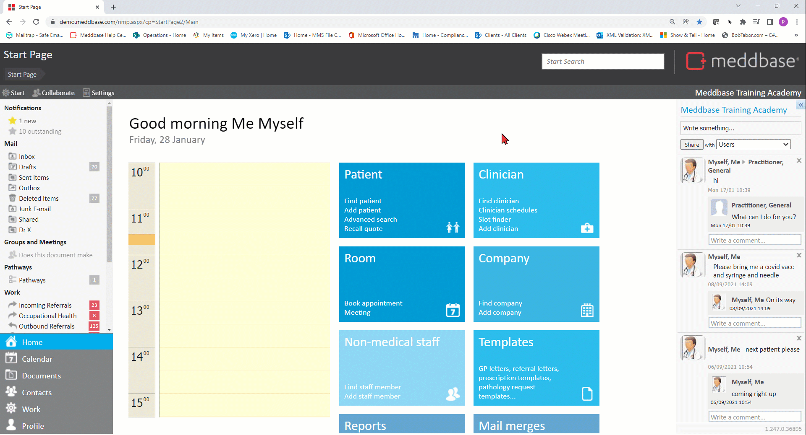
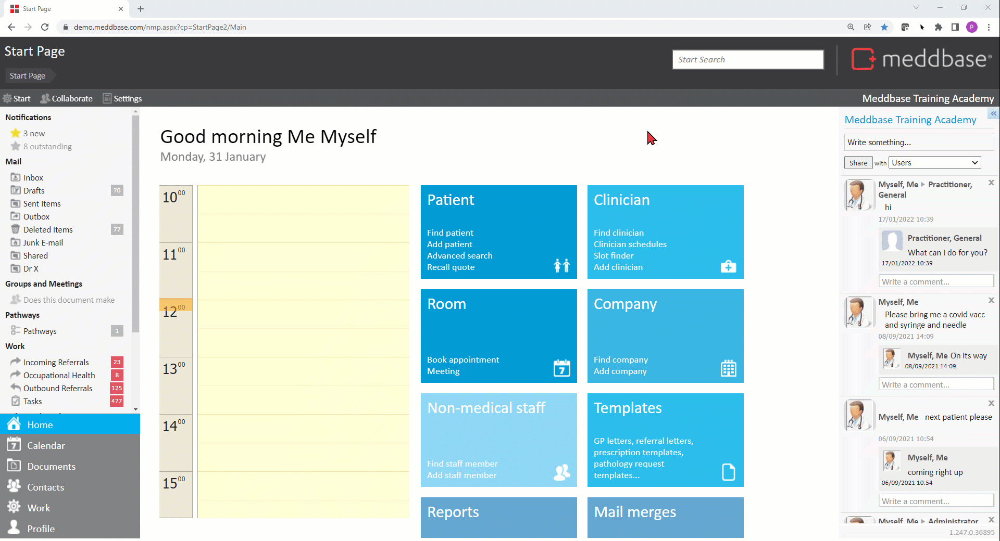
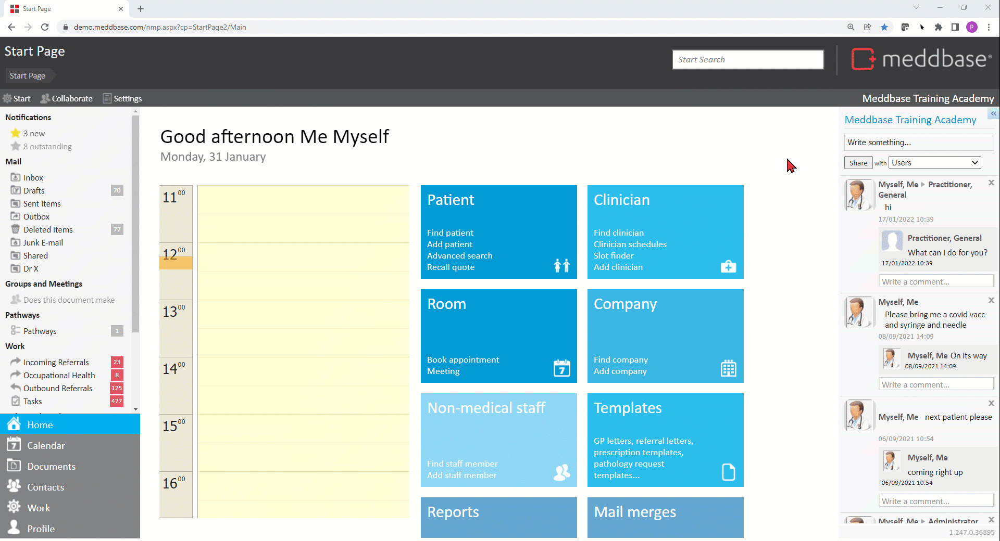

Meddbase enables a high level of patient data security by assigning a patient record to a Patient Certificate, which will determine how users can interact with the record in question.
You can configure multiple Patient Certificates to assign to different types of patients, e.g. General Public, RAF Pilots, Government MPs etc. and specific users or groups of users may only have permissions on one of the certificates, and thus only interact with a given patient type.
The Combined Patient Policy feature then allows a patient's record to be assigned to multiple Patient Certificates simultaneously, which assists with governance of access to patient data.
The Combined Patient Policies feature is also required to enable the Patient Directory Search feature.
Click here for a detailed article on the Patient Directory Search feature.
Click here for a detailed article on Patient Certificates.
This article will describe the setup process and use of the Combined Patient Policy feature and the implications of assigning multiple Patient Certificates to an individual patient's record.
To enable the Combined Patient Policy feature, the following steps apply:-

When multiple Patient Certificates have been configured in your chamber and Allow combined patient policies feature has been enabled, you can assign* several policies to 1 patient at the same.
*The ability to assign a given Patient Certificate to a patient record depends on the Can Assign Policy permission being granted for the user on the respective certificate, e.g. if 3 Patient Certificates exist in the chamber but a user only has the above permission on 1 of them, they won't be able to utilise combined policies when adding a patient.
Click here for a detailed article on Patient Certificates.
To assign multiple Patient Certificates to a patient:-
1. From the Start Page click Add patient (either from the Patient tile or system quick links under the Meddbase name in the upper right corner of the Start Page)
2. Navigate to the Security section where in the Policies fields you will see None selected
3. Click in the field and select/tick the certificates you wish to assign to the patient's record. You will only see certificates you are permitted to assign.
4. Save the patient record once all relevant details have been captured.

The Combined Patient Policy is now created.
To view the newly created combined policies:-
1. From the Start Page navigate to Admin > Security Policy
2. Expand the Patient Certificates folder and you will notice a + button next to the certificates you combined.
3. Expand the Patient Certificate to view the combined policy it's a part of*
*Neither Users nor Roles can be added to the combined policy directly. Users or Roles can only be added to individual certificates/policies

The Users or Roles assigned to the individual certificates are now all assigned to the combined policy and bring with them the granted/denied permissions from these respective certificates, e.g. if a user or role were not allowed to modify patient demographic on the individual certificate, they will not be able to do so on the combined policy either.